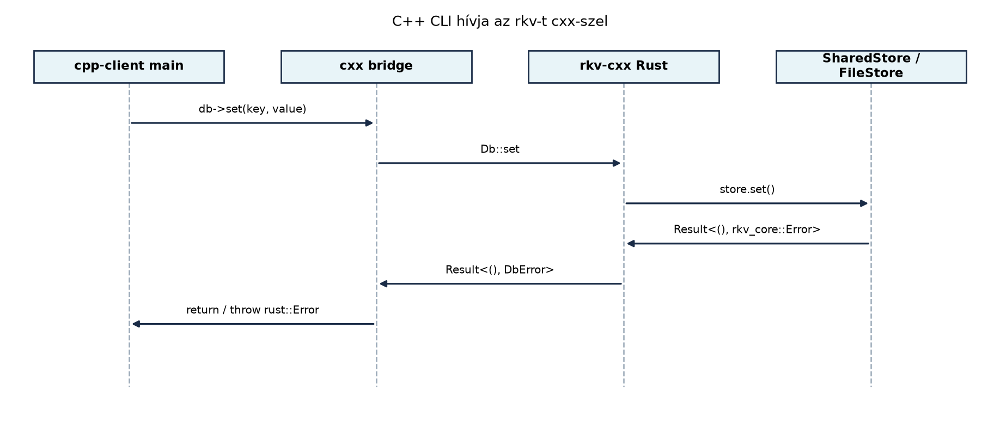

Az előző alfejezetben (C ABI: extern “C”,
repr(C), bindgen és cbindgen) láttuk, hogy a Rust és C/C++ közötti
átjárás a C ABI-n keresztül kézzel írt, unsafe blokkokkal
tűzdelt, hibalehetőségekkel terhelt kódot jelent. A mutatók átadása, a
stringek és vektorok kézi konvertálása, a hibakezelés errno
vagy saját hibakódok formájában mind fokozott figyelmet igényel.
Ráadásul a C++ osztályok, kivételek, std::string és
std::unique_ptr közvetlenül nem férnek hozzá a Rust
oldalról.
A cxx crate ezt a problémát oldja meg azzal, hogy
biztonságos, típusos C++-hidat generál. A
#[cxx::bridge] modulban deklaráljuk a C++ és Rust közötti
interfészt, és a cxx-build eszköz legenerálja mindkét oldal
wrapper kódját. Ennek köszönhetően a gyakori típusok
(std::string, std::vector,
std::unique_ptr, Rust String,
Vec, Box) automatikusan konvertálódnak, a C++
kivételek Rust Result-tá alakulnak, a Rust
Result pedig C++ kivétellé. A híd használata a támogatott
típusok körében nem igényel unsafe-et.
Továbbvitt eredmény. Az itt elkészített C++-integrációt a Záróprojekt: az rkv teljes rendszerként alfejezet használja fel, ahol a C++-kliens a Rust tárolóval együttműködve mutatja be a fokozatos migráció eredményét.
Definíció. A
#[cxx::bridge]egy olyan modul, amely a Rust és C++ közötti interfészt írja le. A modul belsejébenextern "Rust"blokkban a Rust oldalon implementált, C++-ból hívható függvényeket és típusokat deklaráljuk;extern "C++"blokkban pedig a C++ oldalon definiált, Rustból hívható elemeket. Acxx-buildcrate a bridge modul alapján generálja a szükséges C++ és Rust wrapper kódot (alib.rs.hfejlécet és alib.rs.ccforrást).
Szabály 1: támogatott típusok. A bridge-ben a következő típusok szerepelhetnek:
| Rust oldal | C++ oldal | Megjegyzés |
|---|---|---|
&str |
rust::Str |
nem tulajdonló, UTF-8 nézet |
String |
rust::String |
tulajdonló |
&[T] |
rust::Slice<const T> |
nem tulajdonló nézet |
Vec<T> |
rust::Vec<T> |
tulajdonló |
Box<T> |
rust::Box<T> |
tulajdonló, átlátszatlan Rust típushoz |
UniquePtr<T> |
std::unique_ptr<T> |
C++ típus Rust oldali tulajdonosa |
&CxxString |
const std::string & |
C++ std::string Rust oldali nézete |
saját struct |
ugyanaz a mezőkkel generált struct |
megosztott struct, a bridge-ben adjuk meg |
type T; az extern "Rust" blokkban |
rust::Box<T>-ként kezelhető |
átlátszatlan Rust típus |
type T; az extern "C++" blokkban |
T (osztály) |
átlátszatlan C++ típus, csak referencián vagy
UniquePtr-en át érhető el |
A saját struct tehát nem tiltott: ha mezői is támogatott típusok, a
bridge-ben megosztott structként deklaráljuk, és a cxx
mindkét oldalon legenerálja. A nem támogatott típusnál a
cxx-build fordítási hibát ad
(unsupported type).
Szabály 2: Result a bridge-ben. A
bridge-ben a hibatípust nem írjuk ki: a deklaráció
Result<T>, nem Result<T, E>.
fn get(…) -> Result<Vec<u8>>; szerepel, a
Rust implementáció viszont tetszőleges
Result<Vec<u8>, E>-t adhat vissza, ha
E: Display (a gyakorlatban
std::error::Error-t is implementáló saját hibatípus). C++
oldalon a függvény rust::Vec<std::uint8_t>-t ad
vissza, hiba esetén pedig rust::Error kivételt dob,
amelynek what() szövege az E
Display kimenete.fn may_throw(fail: bool) -> Result<()>; szerepel,
a C++ implementáció pedig void-ot ad vissza, és hibát
kivétellel jelez. Rust oldalon ez
Result<(), cxx::Exception>, a kivétel szövege az
Exception::what() metódussal olvasható.A Result<T, String> forma tehát fordítási hiba, és
a String hibatípus sem szükséges: a Display-t
implementáló saját hiba közvetlenül használható.
Szabály 3: namespace. A
#[cxx::bridge(namespace = "rkv")] a generált C++ elemeket
(és a C++ oldalon deklarált típusokat) az rkv névtérbe
teszi. A C++ fejlécben és implementációban ugyanabba a névtérbe kell
írni a Logger-t és a függvényeket.
A cxx előnye a kézzel írt C ABI-val szemben szembetűnő. Hasonlítsuk össze egy értéket visszaadó, hibázhat függvény két megvalósítását.
C ABI (C ABI: extern “C”, repr(C), bindgen és cbindgen):
// C++ oldal
extern "C" {
int rkv_get(RkvStore *store, const char *key, uint8_t **out, size_t *len);
void rkv_buffer_free(uint8_t *ptr, size_t len);
}A hívónak kezelnie kell az int státuszkódot (a
RKV_* makrókkal), a kimeneti mutatót és a felszabadítást, a
Rust oldalon pedig unsafe blokk és
catch_unwind szükséges. Az RkvStatus típus nem
része a generált 19.1-es headernek; a visszatérési típus minden
státuszkódos függvénynél int.
cxx-szel:
Kódblokk — fájl: src/lib.rs · művelet: részlet
(a teljes fájl a labor 2. lépésében) · ellenőrzés:
cargo build -p rkv-cxx
#[cxx::bridge(namespace = "rkv")]
mod ffi {
extern "Rust" {
type Db;
fn get(self: &Db, key: &str) -> Result<Vec<u8>>;
}
}// C++ oldal
rust::Vec<std::uint8_t> value = db->get("key"); // hiba esetén rust::Error kivételA különbség: a cxx generálja a konverziós és memóriakezelési kódot, a
típusok ellenőrzöttek, és a hívó nem férhet rossz mutatóhoz. A Rust
oldalon nincs unsafe.
A cxx nemcsak C++-ból Rust hívását teszi lehetővé, hanem fordítva is.
Tegyük fel, hogy van egy meglévő C++ Logger osztályunk. A
generált rust::Str argumentumot a Rust
&str képezi le, a log metódus pedig
const, mert a Rust oldalon &Logger
receiverként jelenik meg.
Kódblokk — fájl: rkv-cxx/include/logger.h ·
művelet: új fájl · ellenőrzés: a labor 5. lépésében a
cargo build lefordítja
#pragma once
#include <memory>
#include <string>
#include "rust/cxx.h"
namespace rkv {
class Logger {
public:
explicit Logger(std::string prefix) : prefix_(std::move(prefix)) {}
// A cxx a Rust &str-t rust::Str-ként adja át.
void log(rust::Str message) const;
private:
std::string prefix_;
};
// Gyártófüggvény: a cxx nem tud C++ konstruktort hívni, ezért std::unique_ptr-t adunk vissza.
std::unique_ptr<Logger> new_logger(rust::Str prefix);
// C++ függvény, amely kivételt dobhat: Rust oldalon Result<(), cxx::Exception>.
void may_throw(bool fail);
} // namespace rkvKódblokk — fájl: rkv-cxx/src/logger.cc ·
művelet: új fájl · ellenőrzés: a labor 5. lépésében a
cargo build lefordítja
#include "rkv-cxx/include/logger.h"
#include <iostream>
#include <stdexcept>
namespace rkv {
void Logger::log(rust::Str message) const {
std::cerr << prefix_ << ": " << std::string(message) << "\n";
}
std::unique_ptr<Logger> new_logger(rust::Str prefix) {
return std::make_unique<Logger>(std::string(prefix));
}
void may_throw(bool fail) {
if (fail) throw std::runtime_error("C++ hiba");
}
} // namespace rkvA bridge-ben az unsafe extern "C++" blokk jelzi, hogy a
deklarált C++ elemek tényleges létezését és az aláírások egyezését a
programozó garantálja; a hívás maga biztonságos. A Logger
átlátszatlan C++ típus: Rustból csak &Logger
referencián vagy UniquePtr<Logger>-en át érhető
el.
Kódblokk — fájl: rkv-cxx/src/lib.rs · művelet:
részlet (a bridge extern "C++" blokkja) · ellenőrzés:
cargo test -p rkv-cxx (4 teszt zöld)
unsafe extern "C++" {
include!("rkv-cxx/include/logger.h");
type Logger;
fn log(self: &Logger, message: &str);
fn new_logger(prefix: &str) -> UniquePtr<Logger>;
/// A C++ kivétel Rust oldalon `Err(cxx::Exception)`.
fn may_throw(fail: bool) -> Result<()>;
}Rust oldalról a használat:
let logger = ffi::new_logger("rkv"); // UniquePtr<Logger>
logger.log("Hello from Rust"); // UniquePtr<Logger> deref-el &Logger-réMunkakönyvtár: ~/rust-labor/rkv/
Ebben a laborban létrehozunk egy rkv-cxx crate-et, amely
cxx-híddal teszi elérhetővé az rkv tároló alapműveleteit C++-ból. A C++
oldalon egy parancssori eszközt (cpp-client/cxx-cli)
készítünk. Mivel minden CLI-hívás külön folyamat, a
memóriatároló állapota hívások között elveszne; ezért a híd a fájl-alapú
FileStore-t nyitja meg egy megadott adatkönyvtárban, és az
állapot a folyamatok között megmarad.
rkv-cxx crate létrehozásaKódblokk — fájl: terminál (workspace gyökér) · művelet: új
crate · ellenőrzés: ls rkv-cxx/Cargo.toml
cargo new --lib rkv-cxxKódblokk — fájl: rkv-cxx/Cargo.toml · művelet:
teljes csere; a workspace members listájába vegyük fel az
"rkv-cxx"-et is · ellenőrzés:
cargo metadata --no-deps
[package]
name = "rkv-cxx"
version = "0.1.0"
edition = "2024"
rust-version = "1.89"
[lib]
crate-type = ["staticlib", "rlib"]
[dependencies]
cxx = "1"
rkv-core = { path = "../rkv-core" }
[build-dependencies]
cxx-build = "1"
[dev-dependencies]
tempfile = "3"A staticlib hozza létre a C++ kliens által linkelhető
librkv_cxx.a archívumot; az rlib kell a
Rust-oldali cargo test-hez.
A híd az rkv-core valódi API-jára épül: a
SharedStore a Storage trait mögé rejtett
tárolót zár Mutex-be, a
FileStore::open(snapshot, napló) pedig a tartós tárolót
nyitja meg. A hiányzó kulcs a core-ban Option::None; a
hídon ezt explicit NotFound hibává alakítjuk, hogy a C++
kód kivételt kapjon, ne üres értéket.
Kódblokk — fájl: rkv-cxx/src/lib.rs · művelet:
teljes csere · ellenőrzés: cargo test -p rkv-cxx →
4 passed
use std::fmt;
use std::path::Path;
use rkv_core::{FileStore, MemStore, SharedStore};
// A Logger-példa függvényeit a lib csak a tesztekben hívja.
#[allow(dead_code)]
#[cxx::bridge(namespace = "rkv")]
mod ffi {
/// Megosztott struct: mindkét oldalon ugyanaz a mezőkkel megadott típus.
struct Entry {
key: String,
value: Vec<u8>,
}
extern "Rust" {
/// Átlátszatlan Rust típus: C++-ban `rust::Box<rkv::Db>`.
type Db;
fn open_mem() -> Box<Db>;
/// Fájl-alapú tároló: az állapot a folyamatok között megmarad.
fn open_file(dir: &str) -> Result<Box<Db>>;
fn set(self: &Db, key: &str, value: &[u8]) -> Result<()>;
/// Hiányzó kulcsra hiba (`NotFound`), nem üres érték.
fn get(self: &Db, key: &str) -> Result<Vec<u8>>;
/// Hiányzó kulcsra hiba (`NotFound`).
fn del(self: &Db, key: &str) -> Result<()>;
fn list(self: &Db, prefix: &str) -> Result<Vec<Entry>>;
fn count(self: &Db, prefix: &str) -> Result<usize>;
/// Rust függvény, amely C++ objektumot használ.
fn set_logged(self: &Db, logger: &Logger, key: &str, value: &[u8]) -> Result<()>;
}
unsafe extern "C++" {
include!("rkv-cxx/include/logger.h");
type Logger;
fn log(self: &Logger, message: &str);
fn new_logger(prefix: &str) -> UniquePtr<Logger>;
/// A C++ kivétel Rust oldalon `Err(cxx::Exception)`.
fn may_throw(fail: bool) -> Result<()>;
}
}
/// Saját hibatípus: `Display`-t implementál, ezért a cxx `rust::Error` kivételt dob belőle.
#[derive(Debug)]
pub enum DbError {
NotFound(String),
Store(rkv_core::Error),
}
impl fmt::Display for DbError {
fn fmt(&self, f: &mut fmt::Formatter<'_>) -> fmt::Result {
match self {
DbError::NotFound(key) => write!(f, "a kulcs nem található: {key}"),
DbError::Store(e) => write!(f, "tárolóhiba: {e}"),
}
}
}
impl std::error::Error for DbError {
fn source(&self) -> Option<&(dyn std::error::Error + 'static)> {
match self {
// A hiányzó kulcs nem hibaok, nincs mögötte alacsonyabb szintű hiba.
DbError::NotFound(_) => None,
// A tárolóhiba lánca az rkv-core eredeti hibájáig vezet.
DbError::Store(e) => Some(e),
}
}
}
impl From<rkv_core::Error> for DbError {
fn from(e: rkv_core::Error) -> Self {
DbError::Store(e)
}
}
pub struct Db {
store: SharedStore,
}
fn open_mem() -> Box<Db> {
Box::new(Db {
store: SharedStore::new(MemStore::new()),
})
}
fn open_file(dir: &str) -> Result<Box<Db>, DbError> {
let dir = Path::new(dir);
std::fs::create_dir_all(dir).map_err(rkv_core::Error::from)?;
let store = FileStore::open(dir.join("state.json"), dir.join("append.log"))?;
Ok(Box::new(Db {
store: SharedStore::new(store),
}))
}
impl Db {
fn set(&self, key: &str, value: &[u8]) -> Result<(), DbError> {
Ok(self.store.set(key.to_owned(), value.to_vec())?)
}
fn get(&self, key: &str) -> Result<Vec<u8>, DbError> {
self.store.get(key)?.ok_or_else(|| DbError::NotFound(key.to_owned()))
}
fn del(&self, key: &str) -> Result<(), DbError> {
if self.store.delete(key)? {
Ok(())
} else {
Err(DbError::NotFound(key.to_owned()))
}
}
fn list(&self, prefix: &str) -> Result<Vec<ffi::Entry>, DbError> {
let items = self.store.list(Some(prefix).filter(|p| !p.is_empty()))?;
Ok(items
.into_iter()
.map(|(key, value)| ffi::Entry { key, value })
.collect())
}
fn count(&self, prefix: &str) -> Result<usize, DbError> {
Ok(self.list(prefix)?.len())
}
fn set_logged(&self, logger: &ffi::Logger, key: &str, value: &[u8]) -> Result<(), DbError> {
logger.log(&format!("SET {key} ({} bájt)", value.len()));
self.set(key, value)
}
}
#[cfg(test)]
mod tests {
use super::*;
#[test]
fn contract_holds_on_the_rust_side() {
let db = open_mem();
db.set("a", b"1").unwrap();
db.set("b", b"").unwrap(); // üres érték
assert_eq!(db.get("a").unwrap(), b"1");
assert_eq!(db.get("b").unwrap(), b"");
assert!(matches!(db.get("nincs"), Err(DbError::NotFound(_))));
assert_eq!(db.count("").unwrap(), 2);
assert_eq!(db.count("a").unwrap(), 1);
db.del("a").unwrap();
assert!(matches!(db.del("a"), Err(DbError::NotFound(_))));
assert_eq!(db.list("").unwrap().len(), 1);
}
#[test]
fn file_store_persists_between_opens() {
let dir = tempfile::tempdir().unwrap();
let path = dir.path().to_str().unwrap();
open_file(path).unwrap().set("k", b"v").unwrap();
assert_eq!(open_file(path).unwrap().get("k").unwrap(), b"v");
}
#[test]
fn a_cpp_exception_becomes_a_rust_err() {
assert!(ffi::may_throw(false).is_ok());
let err = ffi::may_throw(true).unwrap_err();
assert!(err.what().contains("C++ hiba")); // cxx::Exception
}
#[test]
fn rust_calls_a_cpp_class() {
let logger = ffi::new_logger("rkv");
let db = open_mem();
db.set_logged(&logger, "k", b"vv").unwrap();
assert_eq!(db.get("k").unwrap(), b"vv");
}
}Néhány döntés, amelyet érdemes tudatosítani:
Db a SharedStore-t birtokolja, a C++ oldal
pedig rust::Box<rkv::Db>-t tart. Így nincs
static, és a tárolók függetlenek.list üres prefixre minden bejegyzést visszaad
(None), a count ennek hosszát számolja, így
nincs szükség külön, a core-ban nem létező len API-ra.Db metódusai &self-et vesznek, mert
a belső Mutex adja a változtathatóságot; ez felel meg a
bridge self: &Db receiverének.Kódblokk — fájl: rkv-cxx/build.rs · művelet: új
fájl · ellenőrzés: cargo build -p rkv-cxx --release
fn main() {
cxx_build::bridge("src/lib.rs")
.file("src/logger.cc")
.std("c++17")
.compile("rkv-cxx-glue");
println!("cargo:rerun-if-changed=src/lib.rs");
println!("cargo:rerun-if-changed=src/logger.cc");
println!("cargo:rerun-if-changed=include/logger.h");
}A cxx_build::bridge("src/lib.rs")
beolvassa a Rust forrást, és abból generálja a C++
oldali wrappert; a Rust fájlt tehát soha nem adjuk .file(…)
hívással a C++ fordítónak. A .file(…) kizárólag valódi C++
implementációkat (itt a logger.cc-t) kap.
Kódblokk — fájl:
rkv-cxx/../cpp-client/cxx_cli.cpp (azaz
cpp-client/cxx_cli.cpp a workspace gyökerében) · művelet:
új fájl (a 19.1-es C ABI-s cpp-client/main.cpp-től
elkülönítve, hogy mindkét kliens megmaradjon) · ellenőrzés: az 5. lépés
futtatása
#include "rkv-cxx/src/lib.rs.h"
#include <cstdint>
#include <iostream>
#include <string>
static void usage() {
std::cerr << "Használat: cxx-cli <adatkönyvtár> "
"<SET kulcs érték | GET kulcs | DEL kulcs | COUNT [prefix] | LIST [prefix]>\n";
}
int main(int argc, char** argv) {
if (argc < 3) {
usage();
return 2;
}
const std::string cmd = argv[2];
try {
// Fájl-alapú tároló: a külön folyamatokban kiadott parancsok ugyanazt az állapotot látják.
rust::Box<rkv::Db> db = rkv::open_file(argv[1]);
if (cmd == "SET" && argc == 5) {
const std::string value = argv[4];
const auto* bytes = reinterpret_cast<const std::uint8_t*>(value.data());
db->set(argv[3], rust::Slice<const std::uint8_t>(bytes, value.size()));
std::cout << "OK\n";
} else if (cmd == "GET" && argc == 4) {
rust::Vec<std::uint8_t> value = db->get(argv[3]);
std::cout << "VALUE " << std::string(value.begin(), value.end()) << "\n";
} else if (cmd == "DEL" && argc == 4) {
db->del(argv[3]);
std::cout << "OK\n";
} else if (cmd == "COUNT" && (argc == 3 || argc == 4)) {
std::cout << db->count(argc == 4 ? argv[3] : "") << "\n";
} else if (cmd == "LIST" && (argc == 3 || argc == 4)) {
for (const rkv::Entry& e : db->list(argc == 4 ? argv[3] : "")) {
std::cout << std::string(e.key) << "\n";
}
} else {
usage();
return 2;
}
} catch (const rust::Error& e) {
std::cerr << "ERR " << e.what() << "\n";
return 3;
}
return 0;
}A rust::Str paraméterek const char*-ból és
std::string-ből implicit módon épülnek, a
rust::Slice<const std::uint8_t> bájtnézet kézzel
készül. A rust::Error kivétel a Rust Err
esetén keletkezik; ezt a main elkapja, így a program nem
terminál kezeletlen kivétellel.
Kódblokk — fájl: terminál (workspace gyökér) · művelet: a
híd és a statikus könyvtár építése, majd a C++ CLI fordítása ·
ellenőrzés: a librkv_cxx.a és a cxx-cli
létrejön
cargo build -p rkv-cxx --release
ls target/release/librkv_cxx.a target/cxxbridge/rkv-cxx/src/lib.rs.h
g++ -std=c++17 -Wall -Wextra -I target/cxxbridge -I . \
cpp-client/cxx_cli.cpp target/release/librkv_cxx.a \
-lpthread -ldl -lm -o cpp-client/cxx-cliAz include-útvonalak magyarázata: a -I target/cxxbridge
adja a generált rkv-cxx/src/lib.rs.h és a
rust/cxx.h fejlécet, a -I . pedig a
lib.rs.h-ban szereplő
#include "rkv-cxx/include/logger.h" sort oldja fel a
workspace gyökeréből. A natív linkfüggőségek
(-lpthread -ldl -lm) a Rust standard könyvtár statikus
linkeléséhez kellenek.
Futtatás (minden parancs külön folyamat, az állapotot a megadott könyvtár őrzi):
Kódblokk — fájl: terminál · művelet: parancssorozat · ellenőrzés: a lenti kimenet
D=/tmp/rkv-cxx-demo
./cpp-client/cxx-cli $D SET alma piros
./cpp-client/cxx-cli $D SET alga zold
./cpp-client/cxx-cli $D GET alma
./cpp-client/cxx-cli $D COUNT al
./cpp-client/cxx-cli $D LIST
./cpp-client/cxx-cli $D DEL alga
./cpp-client/cxx-cli $D GET alga; echo "kilépési kód: $?"
./cpp-client/cxx-cli $D COUNTVárt kimenet (a fenti parancsokat kipróbáltuk, az eredmény ez):
OK
OK
VALUE piros
2
alga
alma
OK
ERR a kulcs nem található: alga
kilépési kód: 3
1Ellenőrzési pont. cargo test -p rkv-cxx
négy tesztje zöld (Rust-oldali szerződés, tartósság két nyitás között,
C++ kivétel mint Err, Rust által hívott C++ osztály), a
cxx-cli pedig a fenti kimenetet adja. A hiányzó kulcs
rust::Error kivételt okoz (kilépési kód 3), nem üres
értéket.
Az ábra a C++ CLI, a cxx bridge és a Rust tároló közötti hívásláncot mutatja:

A laborban kézzel fordítottuk a C++ oldalt; ez a könyv ellenőrzött útvonala. Valódi projektben a build rendszer integrálható, de ez opcionális, a szerzői környezetben nem ellenőrzött kitekintés: a Corrosion 0.6.1 CMake-modulja lehetővé teszi Cargo crate-ek beillesztését a CMake buildbe: a CMake meghívja a Cargo-t, és a generált staticlib-et automatikusan linkeli. Az alábbi vázlat a Corrosion 0.6.1 dokumentált API-jára épül, nem lefuttatott eredmény:
# CMakeLists.txt (vázlat)
find_package(Corrosion REQUIRED)
corrosion_import_crate(MANIFEST_PATH ../rkv-cxx/Cargo.toml)
add_executable(cxx-cli cpp-client/cxx_cli.cpp)
target_include_directories(cxx-cli PRIVATE ${CMAKE_SOURCE_DIR} ${CMAKE_BINARY_DIR}/cargo/build/target/cxxbridge)
target_link_libraries(cxx-cli PRIVATE rkv_cxx)Mit ellenőriztünk, és mit nem. A fenti vázlatot
nem futtattuk le: a szerzői környezetben nincs
telepítve a CMake (a rögzített környezet csak GCC 13/Clang 18-at ír elő,
lásd Eszközlánc), ezért a Corrosion 0.6.1 pontos
target- és include-útvonalait (különösen a cxxbridge
könyvtár helyét a CMake build könyvtárán belül) a saját környezetben
kell ellenőrizni. A kézi cargo build + g++
lánc viszont lefutott (lásd az 5. lépést), és ez a CMake-es változat
referenciája: ugyanazt az include-készletet
(target/cxxbridge, a workspace gyökere) és ugyanazt a három
natív könyvtárat kell kapnia. Ha a CMake-es utat választod, előbb egy
friss buildkönyvtárban futtasd a
cmake -S . -B build && cmake --build build
parancsot, és csak a sikeres configure/build után tekintsd
működőnek.
A cxx ideális eszköz egy meglévő C++-kódbázis fokozatos Rustra migrálásához. A stratégia lépései:
std::unique_ptr-t, std::string-et és
más típusokat kapjon, így a migráció nem igényel nagy átírásokat.A cxx híd teljesítménye általában közel van a kézzel írt C ABI-hoz,
mert a generált kód nem végez felesleges másolást a megosztott
típusoknál. A rust::Vec<T> és
rust::String a Rust oldali memóriát látják, így a C++ oldal
közvetlenül olvashatja, módosíthatja őket. A Box<T>
és std::unique_ptr mozgatással adódnak át, nem történik
mély másolás.
A határon való átlépés alapesetben nem inlinelhető (a generált thunk
és a Rust függvény külön fordítási egység), ezért minden hívás
függvényhívási költséggel jár; ez fordítási beállítástól függ, nem
abszolút tilalom: ha a két oldal ugyanazzal az LLVM-mel, LTO-val
(például -Clinker-plugin-lto és -flto) épül,
az inlinelés elvileg lehetséges, de ezt a saját buildünkön kell mérni. A
Result hibája C++ oldalon rust::Error kivétel,
és a kivétel dobása-elkapása jellemzően nagyságrendekkel drágább a
normál visszatérésnél, mert a C++ kivételkezelés a hibaágon
táblavezérelt visszacsévélést végez. Az rkv-ben ezen a környezeten
kivételköltséget nem mértünk, ezért számot nem közlünk;
a döntés elve: ami gyakori és várt (hiányzó kulcs), ne kivétel
legyen.
Gyakori NotFound esetén ezért adjunk nem dobó, explicit
státuszos megosztott típust. A cxx megosztott structja
bool és Vec<u8> mezőt is hordozhat:
#[cxx::bridge(namespace = "rkv")]
mod ffi {
/// Nem dobó keresési eredmény: a hiányzó kulcs gyakori eset, nem kivétel.
struct Lookup {
found: bool,
value: Vec<u8>,
}
extern "Rust" {
type Db;
/// Hiányzó kulcsra `found == false`, nem kivétel.
fn try_get(self: &Db, key: &str) -> Result<Lookup>;
}
}
impl Db {
fn try_get(&self, key: &str) -> Result<ffi::Lookup, DbError> {
let value = self.store.get(key)?;
Ok(ffi::Lookup { found: value.is_some(), value: value.unwrap_or_default() })
}
}C++ oldalon:
auto r = db->try_get("k"); if (r.found) { /* r.value */ }.
A Result marad a valódi hibákra (I/O, poisoned tároló). A
try_get tesztje
(missing_key_is_a_flag_not_an_error) a
cargo test -p rkv-cxx futásban zöld, és
clippy -D warnings-szel is tiszta; a C++ oldali hívást nem
fordítottuk le. A teljesítményt mindig mérni kell, a saját
terhelésünkön.
cxx-build a generált headert a
target/cxxbridge/<crate>/src/lib.rs.h útvonalra
teszi, és a benne lévő #include "rkv-cxx/include/logger.h"
a workspace gyökeréhez képest oldódik fel. Ha a C++ oldal nem találja a
fejlécet, a -I target/cxxbridge és a -I .
hiányzik.Result-ot ad vissza, a C++ hívás
rust::Error kivételt dobhat. Ha nincs
try/catch, a program std::terminate-tel
leáll.Result<T, E> a bridge-ben. A
bridge-ben a hibatípus nem szerepelhet (unsupported type);
a bridge-deklaráció Result<T>, a Rust implementáció
hibatípusa pedig bármilyen Display-t implementáló típus
lehet..file("src/lib.rs") hiba: a Rust fájlt a
bridge(…) hívás olvassa be, a .file(…) csak
.cc/.cpp forrásokat kap.FileStore (vagy a hálózati szerver) őrzi meg az
adatot.&str és &[T] a bridge-ben csak addig
érvényes, amíg a mögöttes adat él. A C++ oldalon a
rust::Str vagy rust::Slice nem tárolható el a
függvényhíváson túl anélkül, hogy a Rust oldali adatot is életben
tartanánk.Lefordul-e az alábbi bridge modul? Ha nem, miért? Javítsd, és add meg
a hiányzó get_data implementációt úgy, hogy a
MyError C++ oldalon rust::Error kivételként
jelenjen meg.
#[cxx::bridge]
mod ffi {
extern "Rust" {
fn get_data() -> Result<Vec<u8>, MyError>;
}
}
#[derive(Debug)]
struct MyError;
impl std::fmt::Display for MyError {
fn fmt(&self, f: &mut std::fmt::Formatter<'_>) -> std::fmt::Result {
write!(f, "MyError")
}
}Írd át az alábbi C ABI-s Rust függvényt cxx bridge-re. A függvény egy
stringet kap, és megfordítva adja vissza; üres bemenetre hibát jelez (a
C ABI-s változat nullptr-t adna).
#[unsafe(no_mangle)]
pub unsafe extern "C" fn reverse(s: *const c_char) -> *mut c_char {
// ...
}Bővítsd az rkv-cxx crate-et egy exists(key)
függvénnyel, amely bool-t ad vissza arról, hogy a kulcs
létezik-e (hiányzó kulcsra nem hiba). Add hozzá a
bridge-hez, implementáld a Rust oldalon, tesztelj, és egészítsd ki a C++
CLI-t EXISTS paranccsal.
A Db metódusai közvetlenül a SharedStore-t
hívják a bridge-ben. Szervezd át úgy, hogy a tárolóműveletek tiszta Rust
függvényekként külön ops modulba kerüljenek, és a
bridge-metódusok csak delegáljanak. Írj egy tesztet, amely a C++ réteg
nélkül, csak az ops modulon át ellenőrzi a szerződést.
Nem fordul le: a cxx bridge-ben a Result hibatípusát nem
lehet kiírni, a cxx-build unsupported type hibát ad. A
deklaráció Result<Vec<u8>>; a Rust
implementáció hibatípusa a Display-t implementáló
MyError maradhat (a std::error::Error
implementálása ajánlott). A hiba C++ oldalon rust::Error
kivétel, what() szövege MyError.
use std::fmt;
#[cxx::bridge]
mod ffi {
extern "Rust" {
fn get_data() -> Result<Vec<u8>>;
}
}
#[derive(Debug)]
struct MyError;
impl fmt::Display for MyError {
fn fmt(&self, f: &mut fmt::Formatter<'_>) -> fmt::Result {
write!(f, "MyError")
}
}
impl std::error::Error for MyError {}
fn get_data() -> Result<Vec<u8>, MyError> {
Err(MyError)
}(Kipróbálva egy külön scratch crate-ben: az eredeti
Result<Vec<u8>, MyError> deklaráció
unsupported type hibával áll meg, a fenti forma
lefordul.)
A fordított irány: ha a C++ függvény
void may_throw(bool) és a bridge-ben
fn may_throw(fail: bool) -> Result<()>;, akkor a
dobott std::runtime_error Rust oldalon
Err(cxx::Exception), amelynek what() metódusa
az eredeti szöveget adja (lásd a labor
a_cpp_exception_becomes_a_rust_err tesztjét).
use std::fmt;
#[cxx::bridge]
mod ffi {
extern "Rust" {
fn reverse(s: &str) -> Result<String>;
}
}
#[derive(Debug)]
struct EmptyInput;
impl fmt::Display for EmptyInput {
fn fmt(&self, f: &mut fmt::Formatter<'_>) -> fmt::Result {
write!(f, "üres bemenet")
}
}
impl std::error::Error for EmptyInput {}
fn reverse(s: &str) -> Result<String, EmptyInput> {
if s.is_empty() {
Err(EmptyInput)
} else {
Ok(s.chars().rev().collect())
}
}A C++ oldalon a függvény rust::String-et ad vissza
(std::string(…)-gé alakítható), és hiba esetén
rust::Error kivételt dob. Nincs unsafe, nincs
kézi felszabadítás.
A bridge bővítése az extern "Rust" blokkban:
fn exists(self: &Db, key: &str) -> Result<bool>;Implementáció a Db blokkban:
fn exists(&self, key: &str) -> Result<bool, DbError> {
Ok(self.store.get(key)?.is_some())
}Teszt:
#[test]
fn exists_is_not_an_error() {
let db = open_mem();
assert!(!db.exists("a").unwrap());
db.set("a", b"").unwrap();
assert!(db.exists("a").unwrap());
}A C++ CLI-ben:
} else if (cmd == "EXISTS" && argc == 4) {
std::cout << (db->exists(argv[3]) ? "true" : "false") << "\n";
}Kódblokk — fájl: rkv-cxx/src/lib.rs · művelet:
új ops modul, a Db metódusai delegálnak ·
ellenőrzés: cargo test -p rkv-cxx
mod ops {
use super::DbError;
use rkv_core::SharedStore;
pub fn get(store: &SharedStore, key: &str) -> Result<Vec<u8>, DbError> {
store.get(key)?.ok_or_else(|| DbError::NotFound(key.to_owned()))
}
pub fn del(store: &SharedStore, key: &str) -> Result<(), DbError> {
if store.delete(key)? {
Ok(())
} else {
Err(DbError::NotFound(key.to_owned()))
}
}
}
impl Db {
fn get(&self, key: &str) -> Result<Vec<u8>, DbError> {
ops::get(&self.store, key)
}
fn del(&self, key: &str) -> Result<(), DbError> {
ops::del(&self.store, key)
}
}Az ops függvények nem ismerik sem a cxx-et, sem a
Db-t, ezért egy
SharedStore::new(MemStore::new()) értékkel C++ nélkül
tesztelhetők; a bridge-metódusok vékony delegálók maradnak. Ez a
szétválasztás előkészíti a Záróprojekt
tesztelhetőségét.
A cxx crate biztonságos, típusos hidat generál Rust és
C++ között. A #[cxx::bridge] modulban
extern "Rust" és extern "C++" blokkokkal
deklaráljuk a határon átívelő függvényeket és típusokat; a
cxx-build a bridge-et tartalmazó Rust fájlt olvassa be, és
legenerálja a wrapper kódot, a .file(…) pedig csak valódi
C++ forrásokat kap. A bridge-ben a hibát Result<T>
jelzi: a Rust implementáció Display-t implementáló
hibatípusa C++ oldalon rust::Error kivétel, a C++ kivétel
Rust oldalon Err(cxx::Exception). Megosztott structok és
átlátszatlan típusok is használhatók, a C++ osztályokat gyártófüggvényen
és UniquePtr-en keresztül érjük el. A labor az
rkv-cxx crate-et a valódi
SharedStore/FileStore API-ra építi, a CLI
külön folyamatai pedig a fájl-alapú tárolón át osztoznak az állapoton. A
CMake/corrosion build vázlat, nem futtatott. Továbbvitt
eredmény: a C++-integráció az r051
záróprojektben teljes rendszerként működik együtt a Rust
tárolóval.
cxx 1, g++ 13): a
cargo test -p rkv-cxx négy tesztje, a
cargo build --release, a cxx-cli fordítása és
a labor kimenete, valamint a 2. feladat és az 1. feladat javított/hibás
bridge-formája.cxx crate API-ja és a generált fájlok elnevezése a
crate verziójától függően változhat; a pontos részletek a docs.rs-en
találhatók.